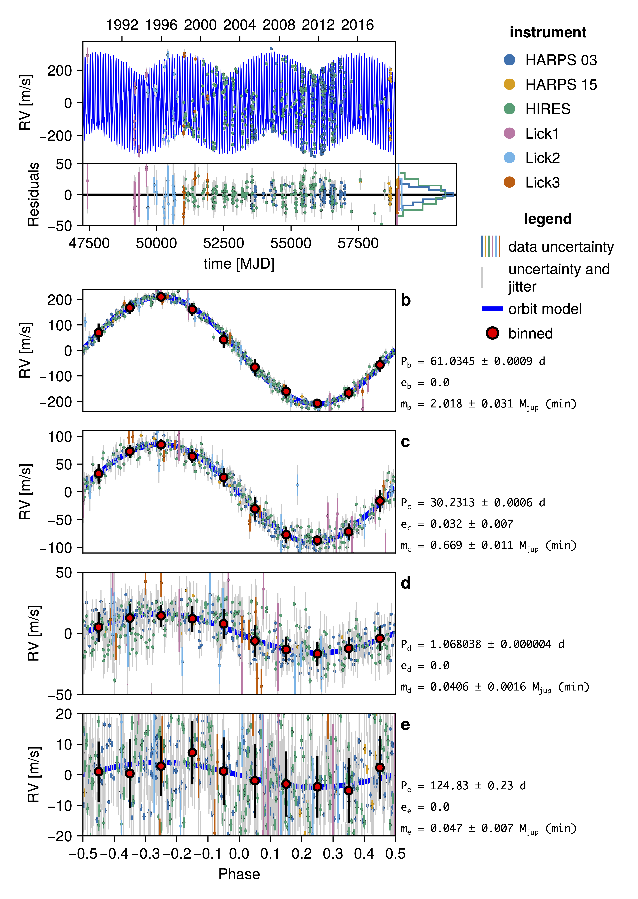

Radial Velocity Figures
Two figures cover radial velocity, and they answer different questions.
rvplot is the single-draw summary: one time series carrying every instrument at once, with a residual strip and a marginal histogram, then one phase-folded panel per planet with noise-weighted binned means. This is the publication figure.
octoplot is the posterior view: the spread of orbits the fit allows, with each instrument on its own panel.
res = rvplot(model, chain) # the highest-posterior-density draw
res = rvplot(model, chain, 42) # a draw you pick
Why one draw, and why that lets instruments share an axis
A calibrated RV series is only defined per draw. Each instrument's zero point, its jitter, the long-term trend and the other planets' signals that are subtracted before folding all move from sample to sample. Fix a draw and every one of those is a number: the data can be shifted onto a single model curve and several spectrographs can be compared on one axis, honestly, because everything in the frame belongs to the same sample.
Show many draws and that stops being true — there is no one calibration to put the data in. So octoplot does the opposite: it leaves each instrument's measurements exactly as reported, gives each instrument its own panel, and lets each draw's model curve carry that draw's own offset and trend. The curves move; the data stay put. That is the only arrangement in which a posterior cloud and a dataset are both drawn correctly.
octoplot(model, chain; show_sky=false, channels=radvel)This is a policy, not a special case for RV. Each observation type declares whether its calibration is tight enough to share a panel through sharepanel; relative astrometry says yes (a platescale pinned to a fraction of a percent moves nothing visibly), radial velocity says no.
Reading the panels
Time series
- Every instrument, one colour and one marker shape each — the shapes matter in print and for readers who cannot rely on colour.
- One model curve per draw. In
rvplotthere is exactly one. - Error bars: the black bar is the raw measurement uncertainty; the grey extension adds that instrument's fitted jitter (and its Gaussian-process predictive variance, if there is one).
- Calendar dates label the top of the figure; MJD numbers label the bottom.
Residual strip
Directly under the time series, with a marginal histogram beside it.
With one draw the residuals are in m/s, and each is the measurement minus everything the model accounts for — orbit, offset, trend, and the Gaussian-process activity prediction where one was fitted.
With several draws — which means octoplot, since rvplot shows one — they are whitened, and each point becomes a boxplot of its own (data − model)/σ_eff distribution across the draws, with the histogram drawn against a unit normal. This is not a display preference. A raw residual is not comparable between draws — each draw has its own jitter, so the same point sits a different number of σ from the model in each — which is why octoplot(...; whiten=false) is an error unless you also ask for ndraws=1. σ_eff is measurement uncertainty, jitter and GP variance combined, so the z-scores are standard normal for a fit that is working.
Phase-folded panels
One per planet: the data folded on that planet's period with the other planets' signals removed exactly (through the reference grammar, not plot-side subtraction), the isolated single-planet model curve, and noise-weighted binned means in red. Phase zero is the signal's upward zero crossing, as before.
A bin has to hold at least two points to be drawn: the "mean" of a single measurement is that measurement, and drawing it as one would move it from its own phase to the bin centre and replace its error bar with the scatter of one value, which is zero. A fold with fewer points than bins (nbins=20 by default) therefore shows its measurements and no binned series — lower nbins if you want binning on a short series, or show_binned=false to turn it off.
A binned point's error bar is the uncertainty of the mean, not the spread of the points that went into it. It is the larger of two numbers: 1/√(Σw), the textbook error on a noise-weighted mean (w = 1/σ_eff²), which is what RadVel and juliet draw and is exactly right when the residuals are white; and s_w/√n, the bin's own bias-corrected weighted scatter over the number of points in it. The second is bigger precisely when the points in a bin disagree by more than the noise model says they should — correlated residuals, or uncertainties that are too small — so taking the maximum keeps the analytic value as a floor no mean can beat while still letting the data speak when it contradicts the model. Before v9 the bar was the raw weighted scatter, so existing phase-fold figures will show different bars.
With a Gaussian process in the model, read any binned bar as a heuristic: the GP is what makes neighbouring residuals correlated in the first place, and the whitened residual strip is the rigorous view of whether the fit is working.
Correlated noise
Where a gaussian_process was fitted, its prediction is drawn as a band around the model curve, subtracted from the residuals, and folded into σ_eff. See Fit Gaussian Process. The band is a single-draw mark: drawing it for 250 draws puts each draw's plain orbit curve and its activity-added twin on one axis, so octoplot leaves it off unless you pass gpband=true.
Options
rvplot(model, chain;
show_phase = true, # phase-folded panels
show_hist = true, # marginal residual histogram
show_legend = true, # instrument + symbol legend, in a column at the right
show_phase_resid = false, # a residual strip under each phase panel too
show_perspective = false, # the frame's own RV drift; see below
gpband = true, # the correlated-noise band
curvecolor = :blue, # `nothing` gives each planet its own accent colour
datastyle = nothing, # marker/error-bar overrides; see below
figscale = 1.0,
fname = nothing, # write the figure here
)The phase panels show the fold alone by default. Folding rearranges the residuals along x but leaves their values alone, so a strip under each one is the time panel's residuals redrawn once per planet — show_phase_resid=true if you want them anyway.
datastyle overrides how a data point is drawn, as a NamedTuple merged over the defaults — markersize, resid_markersize, strokewidth, σ_linewidth, σ_color, σeff_linewidth, σeff_color. σ_color = :instrument (this figure's default) draws the inner measurement bar in the point's own colour, which is what keeps several instruments separable on one axis; :black is the per-instrument-panel convention octoplot uses. The same keyword is accepted by timeseriespanel! and phasefoldpanel!.
Whether the system barycentre's own secular (perspective) radial-velocity drift is part of the fit is declared per dataset: an absolute RadialVelocityObs carries secular_acceleration=:model (the default — Octofitter adds the drift to the prediction) or :data_corrected (your pipeline already removed it, so the model adds nothing). See How Octofitter Computes Orbits.
Either way the drift is not in this figure's model curve, which comes from the pure radvel query, and the data are calibrated only by each instrument's offset and trend_function. So with :model and an absolute frame the plotted points carry the drift while the curve does not. The residual strip and the phase folds are unaffected — they go through the full forward model, drift included. show_perspective=true overlays that drift (PlanetOrbits.frame_rv, relative to its value at the first plotted epoch) as a dashed orange line so you can see how large it is.
Choosing a draw
rvplot(model, chain, 42) # an arbitrary draw
rvplot(model, chain[42:42, :, :]) # the same thing, by slicingSlicing works for every plotting function, not just this one.
Animations
rvplot_animated sweeps through the posterior: it rebuilds the figure for N single-draw slices and records them, so the phase folds move with each draw's own period.
Octofitter.rvplot_animated(model, chain; N=50, framerate=4, fname="rv-posterior.mp4")Any extension Makie can write from a VideoStream works (.mp4, .gif, .mkv). For a different figure per frame, loop over single-draw slices yourself:
draws = rand(1:size(chain, 1), 50)
for (k, i) in enumerate(draws)
octoplot(model, chain[i:i, :, :]; fname="frame-$(lpad(k, 3, '0')).png")
endBuilding a custom RV figure
The panels are public functions, so you can assemble your own layout from a PosteriorSeries:
using Octofitter, CairoMakie
series = Octofitter.PosteriorSeries(model, chain; N=200)
# `entries` is the (observation, channel) list for the panel you want.
entries = [(rvlike, ch) for ch in Octofitter.plotchannels(rvlike)]
fig = Figure(size=(700, 700))
timeseriespanel!(fig[1, 1], series, entries) # data vs model + residuals
phasefoldpanel!(fig[2, 1], series, entries; row=1) # folded on hierarchy row 1
figListing several observations' channels in one entries vector is what puts several instruments in one panel — and calibrate=:data is what makes that legitimate, which is why you should only do it for a single-draw series. See timeseriespanel!, phasefoldpanel! and skypanel!.
For the underlying data rather than a figure, Octofitter.residuals(obs, ctx) returns, per channel, the epochs, the calibrated data, the model, the residual and the effective uncertainty; obscontext builds the ctx from a PosteriorSeries. Both RadialVelocityObs and MarginalizedRVObs implement it.